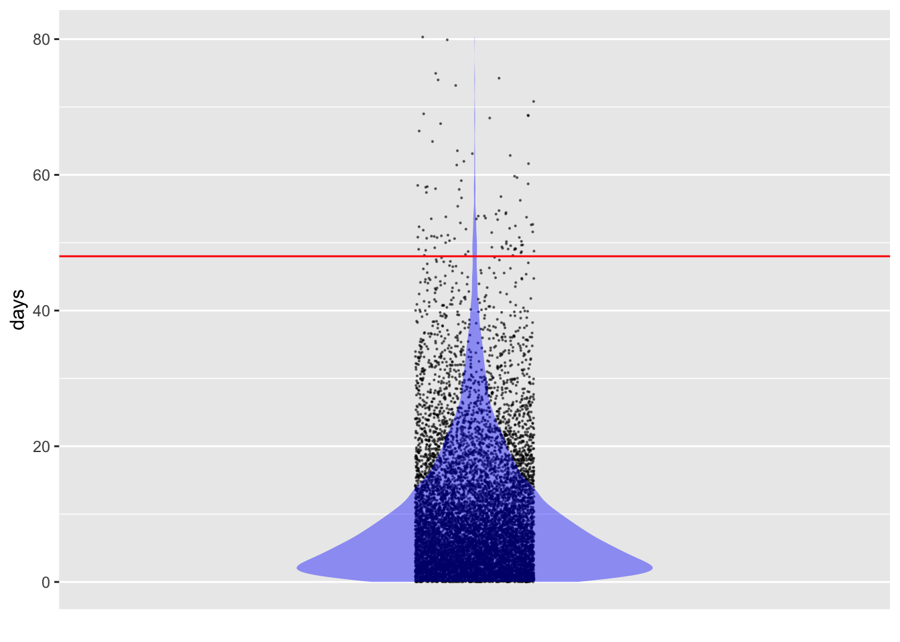
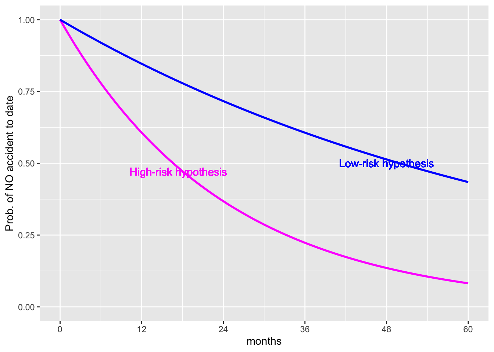
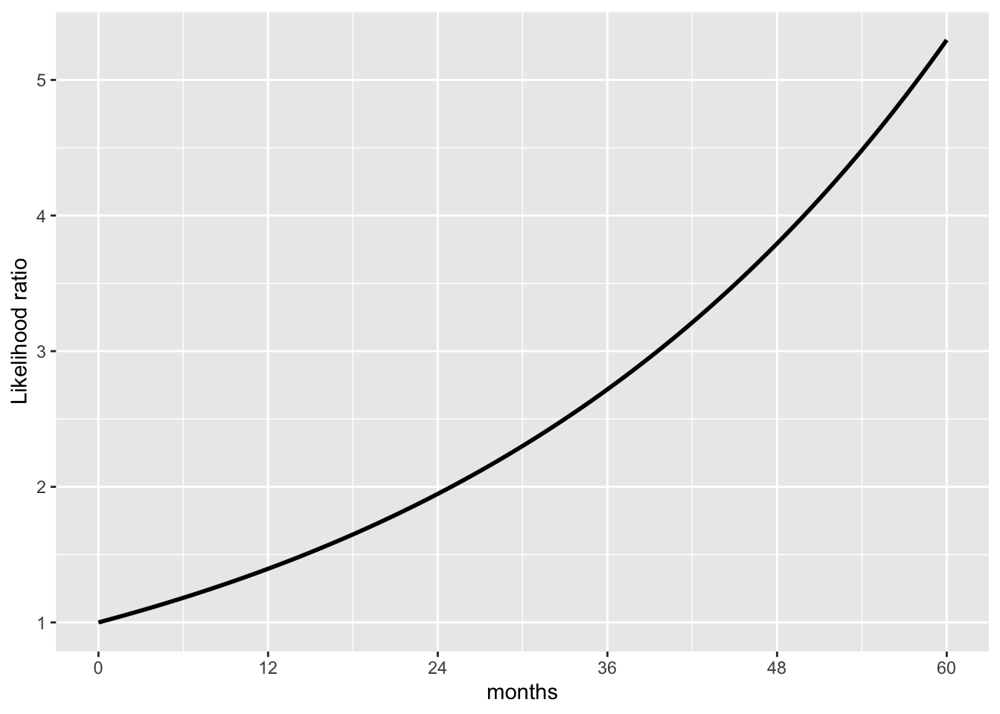

16 Estimation and likelihood
A sign showing the number of days since the last accident is common at construction or industrial workplaces. Perhaps such signs are better than a generic “Accidents happen! Be careful!” The days-since sign always points to an actual accident, not just a theoretical possibility, and gives a small visual encouragement after each new accident-free day.
From Lesson 15, we have a model for the time between accidents: the exponential distribution. This is only a model. No law of physics says that accidents happen randomly at a given rate, nor is there a reason to think that every day or task is equally dangerous. Still, knowing about the exponential model helps to put the data—48 days in -Figure 16.1 —in a context. For instance, suppose the past average rate of accidents at the worksite was one per 10 days. Would the current tally of 48 days be good evidence that something has changed to make the worksite safer?
In principle, the days-since-the-last-accident indicator can be informative. For instance, if there had been 480 consecutive accident-free days many people would understandably conclude that the worksite is now safer than it was historically. But the situation is not always so clear: If an accident occurs only three days after the last, would it be fair to conclude that the worksite is more dangerous than in the days when accidents happened about once every ten days?
This Lesson introduces a technical concept, “likelihood,” that can provide a ready answer to such questions. We’ll define “likelihood” here, but it will likely take some time to make sense of the definition.
Likelihood is a number in the same format as a probability. Likelihood comes into play after we have observed some data. With the data in hand, we consider one at a time each of a set of hypotheses. A hypothesis relevant to the workplace safety context would be an accident rate of 0.1 per day. Another hypothesis is an accident rate of 0.02 per day. Still another hypothesis is a rate of 0.13 accidents per day. There are many reasonable hypotheses, but for a likelihood calculation we take just one at a time. In a world where the given hypothesis is true, the likelihood from that hypothesis is the probability of seeing the observed data.
Note that the likelihood is based on an assumption: the given hypotheses. By comparing the likelihoods from different hypotheses we can get a handle on which hypotheses are more believable than others. It cannot be over-emphasized that a likelihood calculation is always rooted in a hypothesis. Various equivalent phrases can be used to describe the situation: the calculation is done “under a hypothesis,” or “given a hypothesis,” or “under the assumption that …,” or, as we said above, “In a world where the given hypothesis is true.”
How likely?
Using the technology of noise models, it is comparatively easy to to calculate a likelihood. The idea is to create a world where the given hypothesis is true and collect data from it. The tools for creating that world are mathematical or computational; we do not have to form a large sphere orbiting the sun.
An easy way to form such a hypothetical world is via simulation. For example, we know from Lesson 15 that it is conventional to use an exponential noise model to represent the duration of intervals between random events. If the world we want to create is that where the accident rate is 0.1 per day, we simply set the rate parameter of rexp() to that value when we generate data.
Accident_sim <- datasim_make(
days <- rexp(n, rate = 0.1)
)In the real world, it can take a long time to collect data, but with simulations it is practically instantaneous. Let’s collect 10,000 simulated accidents from this made-up world where the accident rate is 0.1 per day:

Figure 16.2 shows that—if the accident rate were, as hypothesized, 0.1 per day—it’s very unlikely for an accident-free interval to reach 48 days. The calculation is a simple matter of wrangling the simulated data:
Sim_data |> summarize(mean(days >= 48))| mean(days >= 48) |
|---|
| 0.0088 |
In a world where the accident rate were 0.1 per day, any given interval will be 48 days or longer with a probability near 1%.
To make use of a calculated likelihood, we need to compare it to something else, usually one or more other likelihoods calculated under different hypotheses.
Comparing different hypotheses using likelihood
To illustrate the use of likelihood, consider the seemingly simple context of deciding between two alternatives. I say “seemingly” because the situation is more nuanced than a newcomer might expect and will be dealt with in detail in the “Hypothetical Thinking” section of these Lessons.
Imagine the situation of an insurance company and a new driver. It’s reasonable to expect that some new drivers are better than others. Rough fairness suggests that prudent, careful, responsible drivers should pay less for insurance than risky drivers.
The insurance company has lots of data on new drivers insured over the last 20 years. The company can use this data—hundreds of thousands of drivers—to measure risk. The company’s actuaries discover that, using all manner of data, it can divide all the drivers into two groups. For one group—the high-risk group—the rate is one accident every 24 months. The low-risk group averages one accident per 72 months. (Remember, these are new drivers.)
The insurance company decides to use a framework of a probationary period. Initially, the driver is on probation. Insurance fees will be high, reflecting the overall riskiness of new drivers. After several months of accident-free driving without any moving violations, the insurance fee will be lowered. For the others, the insurance fee will go up.
How long should the probationary period last? Likelihood provides an approach to answering the question.
The company approaches each new driver with two competing hypotheses: the high-risk hypothesis and the low-risk hypotheses. Initially, it doesn’t know which hypothesis to assign to an individual driver. It will base its eventual decision on the driver’s accumulated driving record. The duration of the probation period—how much time is accumulated without an accident—will be set so that the likelihood of the low-risk hypothesis is twice that of the high-risk hypothesis.
Why twice? We will come back to this point after working through some details.
We won’t go into the detailed algebra of calculating the likelihood; the results are in Figure 16.3. There are two curves, each showing the probability of not being in an accident as a function of months driving. Why two curves? Because there are two hypotheses being entertained: the low-risk and the high-risk hypothesis.


Initially, at zero months of driving, the probability of no accident to date is 1, regardless of which hypothesis is assumed. (If you haven’t driven yet, you haven’t been in an accident!) After 12 months of driving, about 60% of presumed high-risk drivers haven’t yet been in an accident. For the presumed low-risk drivers, 85% are still accident-free.
At 24 months, only 37% of presumed high-risk drivers are accident-free compared to 72% of presumed low-risk drivers. Thus, at 24 months, the likelihood of the low-risk hypothesis is twice that of the high-risk hypothesis. A probationary period of 24 months matches the “twice the likelihood criterion” set earlier.
Why do we say, “presumed?” Individual drivers don’t have a label certifying them to be low- or high-risk. The likelihoods refer to an imagined group of low-risk drivers and a different imagined group of high-risk drivers. The calculations behind Figure 16.3 reason from the assumed hypothesis to whether it’s likely to observe no accidents to date. But we use the calculations to support reasoning in the other direction: from the observed accident-free interval to a preference for one or the other of the hypotheses.
Let’s be careful not to get ahead of ourselves. Likelihood calculations are an important part of statistical methods for making decisions, but they are hardly the only part. We are using a likelihood ratio of two in this example for convenience in introducing the idea of likelihood. A systematic decision-making process should look at the benefits of a correct classification and the costs of an incorrect one, as well as other evidence in favor of the competing hypotheses. We will see how to incorporate such factors in Lesson 28. In Lesson 29 we will see what happens to decision making when no such evidence is available or admissible.
This is where we come back to “twice.”
Distinguishing between “probability” and “likelihood”
A challenge for the statistics student when studying uncertainty is the many synonyms used in everyday speech to express quantitative uncertainty. For instance, all these everyday expressions mean the same thing:
- The chance of the picnic being cancelled is 70%.
- The probability of the picnic being cancelled is 70%.
- The likelihood of the picnic being cancelled is 70%.
- The odds of the picnic being cancelled are 70%.
The technical language of statistics makes important distinctions between probability, likelihood, and odds. We will leave “odds” for Lesson 21, when we discuss the accumulation of risk. For now, let’s compare “probability” and “likelihood.”
“Probability” and “likelihood” have much in common. For instance, both are expressed numerically, e.g. 70% or 0.023. The difference between “probability” and “likelihood” involves
- The kind of event they are used to describe
- The reasoning that lies behind them
- The uses to which they are put
| . | Probability | Likelihood |
|---|---|---|
| Numerically | Between 0 and 1. | greater than or equal to zero |
| Event | An (as yet) uncertain outcome | An observed outcome |
| Logic | Based on mathematical axioms | Based on competing hypotheses |
| Use | e.g. prediction of an outcome | Evaluating observed data in terms of competing hypotheses |
This use of “odds” is mathematically incorrect, but common in practice. If the chance is 70%, then the corresponding odds are 7-to-3. See Lesson 21.
Likelihood functions (optional)
Likelihood calculations are widely used in order to estimate parameters of noise models from observed data. In Section 16.2 we looked at using the likelihood of observed data for each of two hypotheses. Parameter estimation—e.g. the rate parameter in the exponential or the poisson noise models—provides a situation where each numerical value is a potential candidate for the best parameter.
To help understand the reasoning involved, Figure 16.4 shows a typical graph for probability and another graph typical of likelihood.


Both graphs in Figure 16.4 show functions. A typical use for a probability function is to indicate what values of the outcome are more or less probable. The function can only be graphed when we assume the parameter for the noise model. Here, the assumed parameter is a rate of 0.1, that is, an average of one event every ten years. As anticipated for an exponential distribution, an interval of, say, 5 years is more probable than an interval of 10 years, which is more probable than an interval of 20 years.
In contrast, a typical use for a likelihood function is to figure out what parameter values accord more strongly than others with the observation. The likelihood function can only be graphed when we know the observed value. Here, the observed interval between events was 25 years. This single observation of an interval leads to a rate parameter of 0.04 being the most likely, but other rates are almost equally likely. Which rates are unlikely: below something like 0.005 or above something like 0.2 per year.
For a probability function, the interval duration is mapped to x. In contrast, for a likelihood function, the rate parameter is mapped to x.
Although the two graphs in Figure 16.4 have different shapes, they are both closely related to the same noise model. Recall that the R functions implementing the exponential noise model are rexp(nsamps, rate=) and dexp(interval, rate=). The probability graph in Figure 16.4 shows the function dexp(x, rate=0.1) plotted against x. The likelihood graph, in contrast, shows the function dexp(x=25, rate) plotted against rate. The same dexp(x, rate) function is shown in both. What’s different is which argument to dexp(x, rate) is set to a constant and which argument varies along the x-axis. In likelihood calculations, x is fixed at the observed value (after the event) and rate is left free to vary. In probability calculation, rate is fixed at the assumed value and x is left free to vary.
The fixed x value in a likelihood function comes from an observation from the real world: data. The observation is a measurement of an event that’s already happened. We use the observation to inform our knowledge of the parameter. On the other hand, the fixed parameter value in a probability calculation might come from anywhere: an assumption, a guess, a value our research supervisor prefers, a value made up by a textbook writer who wants to talk about probability.
Data narrows the likelihood function (optional)
The likelihood function in Figure 16.4 comes from a single observation of 25 year between events. A single observation can only tell you so much; more data tells you more. To see how this works with likelihood, we will play a game.
In this game I have selected a rate parameter. I’m not going to tell you what it is until later, but I will give you some data. Here are ten observed intervals (which I generated with rexp(10, rate=____)), where ____ was filled in with my selected rate.
| interval |
|---|
| 100 |
| 270 |
| 36 |
| 27 |
| 140 |
| 42 |
| 27 |
| 54 |
| 120 |
| 34 |
The likelihood function for the first observation, 100.5, is dexp(100.5, rate) ~ rate. The likelihood for the second observation, 269.9, is dexp(269.9, rate) ~ rate. And so on for each of the ten observations.
When there are multiple observations, such as the 10 shown above, the likelihood of the whole set of observations is the product of the individual likelihoods. To illustrate, the first panel of Figure 16.5 shows the likelihood for the first ten observations. The peak is wide and falls off slowly from its maximum. After 30 observations, the peak is narrower. After 100 observations, narrower still.
The rate at which the maximum likelihood occurs gives the single most likely parameter value given the observed data. Notice in Figure 16.5 that the peak location shifts from panel to panel. This is natural since the data is different for each panel.
Finding the location of the maximum is straightforward, but the likelihood function can also be used to construct a band of rates which are all plausible given the data. This band (shown in red in Figure 16.5) corresponds to the width of the peak and is a standard way of indicating how precise a statement can be made about the parameter. More data rules out more possibilities for the parameter. A rough and ready rule for identifying the band of plausible parameters looks at the two parameter values where the likelihood falls to about 1/7 of its maximum value.
In the driver insurance example, we used a ratio of 1/2. Different ratios are appropriate for different purposes.
Now it’s time to reveal the rate parameter used to generate the observations: 0.012. That is well inside each of the likelihood peaks.